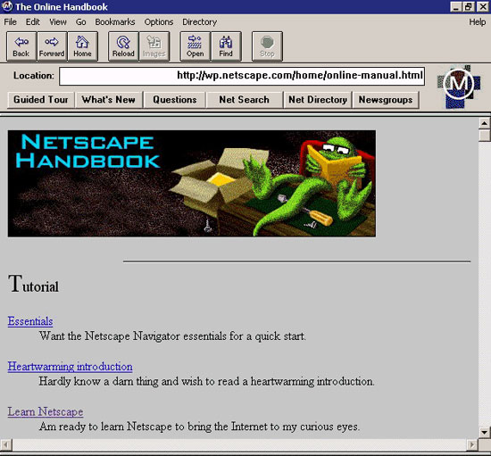
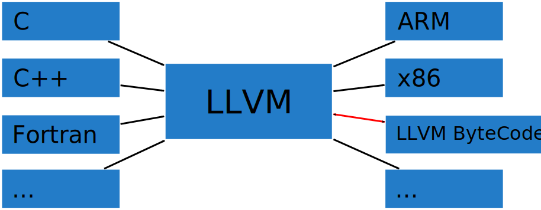
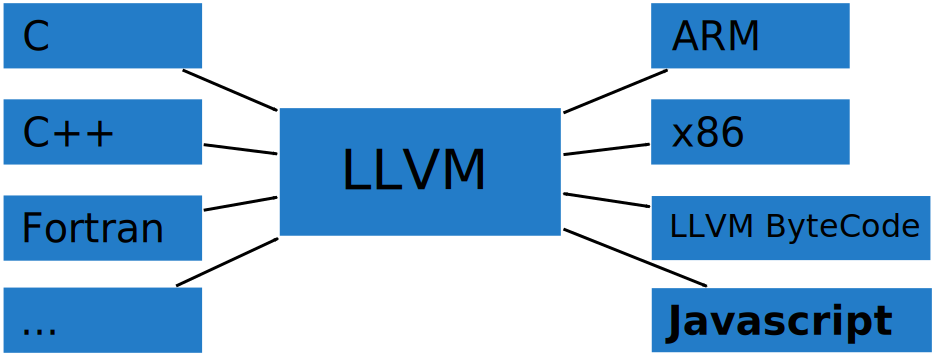
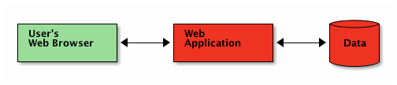
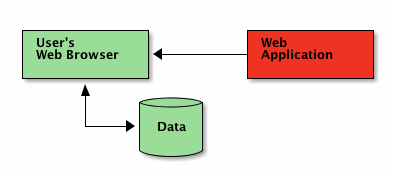

Native Programme im Browser
C/C++ Programme mit Emscripten nach Javascript portieren
Manuel Schölling / manuel.schoelling@gmx.de - github.com/manuels

Ye good old days
>github.com/ma
The Internets
 m
The Internets


developed by
Alon Zakai@mozilla.org
Unreal Engine
unrealengine.com/html5
LLVM
low level virtual machine
LLVM

Using Emscripten

Getting Emscripten
git clone https://github.com/kripken/emscripten.git
git checkout incoming
Using Emscripten
int main() {
char msg[] = "Hello World!";
printf("%s\n", msg);
return 0;
}
$ gcc test.c
$ ls -l a.out
-rwxr-xr-x 1 manuel manuel 7387 Okt 29 18:02 a.out
$ emcc test.c
$ ls -l a.out.js
-rw-r--r-- 1 manuel manuel 173828 Okt 29 18:03 a.out.js
$ emcc -O3 test.c
-rw-r--r-- 1 manuel manuel 43465 Okt 29 18:08 a.out.js
Using Emscripten
STATIC_BASE = 8;
STATICTOP = STATIC_BASE + 24;
allocate([72,101,108,108,111,32,87,111,114,108,100,33,0,0,0,0,
37,115,10,0,0,0,0,0], "i8", ALLOC_NONE, Runtime.GLOBAL_BASE)
function _main() {
var label = 0;
var tempVarArgs = 0;
var sp = STACKTOP; STACKTOP = (STACKTOP + 16)|0;
(assert((STACKTOP|0) < (STACK_MAX|0))|0);
var $1;
var $msg=sp;
$1=0;
var $2=$msg;
assert(13 % 1 === 0);(_memcpy($2, ((8)|0), 13)|0);
var $3=(($msg)|0);
var $4=_printf(((24)|0), (tempVarArgs=STACKTOP,STACKTOP =
(STACKTOP + 8)|0,(assert((STACKTOP|0) < (STACK_MAX|0))|0),
HEAP32[((tempVarArgs)>>2)]=$3,tempVarArgs));
STACKTOP=tempVarArgs;
STACKTOP = sp;
return 0;
}
Asm.js Benchmark

Compiling Programms
The native way
$ ./configure
$ make
$ make install
The Emscripten way
$ emconfigure ./configure
$ emmake make
Compiling Programms
- Compile it to native target
- Compile all dependent libraries
- Configure (with as few features as possible)
- Compile it to javascript
The virtual FS
var home = FS.createFolder('/', 'home', true, false);
FS.createFolder(home, 'user', true, true);
FS.createDataFile('/', 'text.txt', 'Hello World', true, false);
/* FS.createLazyFile('/', 'site.html',
'other/page.htm', true, false); */
FS.createDevice('/dev', 'random', function() {
return Math.floor(Math.random() * 256);
});
Common Pitfalls
- Calling compiled code during compilation
- Unsupported C/C++ API call
./src/library.js./tests/runner.py
- Use
EMCC_DEBUG=2 emmake make
fork();
- Run compiled script in WebWorker
- Use message passing to get status/results
FS.createLazyFile()uses sync XMLHttpRequest
which is disabled for Firefox and Chromium
but not for WebWorkers!
Unhosted.org

Unhosted.org
Web 2.0
Unhosted
Demo Time
- texlive.js
-
unix-toolbox.js
- Exact-Image
- GnuPG
- file
- Poppler
- ImageMagick
- xz